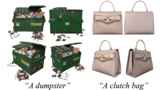
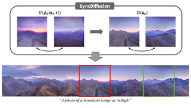

Publications
2026

BézierFlow: Learning Bézier Stochastic Interpolant Schedulers for Few-Step Generation
Yunhong Min*, Juil Koo*, Seungwoo Yoo, Minhyuk Sung (* equal contributions)
ICLR 2026
Project arXiv Code

PairFlow: Closed-Form Source-Target Coupling for Few-Step Generation in Discrete Flow Models
Mingue Park*, Jisung Hwang*, Seungwoo Yoo*, Kyeongmin Yeo, Minhyuk Sung (* equal contributions)
ICLR 2026
arXiv


DiffusionRollout: Uncertainty-Aware Rollout Planning in Long-Horizon PDE Solving
Seungwoo Yoo*, Juil Koo*, Daehyeon Choi*, Minhyuk Sung (* equal contributions)
TMLR
PDF

Proxy-Free Gaussian Splats Deformation with Splat-Based Surface Estimation
Jaeyeong Kim, Seungwoo Yoo, Minhyuk Sung
3DV 2026
arXiv

BoxSplitGen: A Generative Model for 3D Part Bounding Boxes in Varying Granularity
Juil Koo*, Wei-Tung Lin*, Chanho Park, Chanhyeok Park, Minhyuk Sung (* equal contributions)
WACV 2026
2025
Ψ-Sampler: Initial Particle Sampling for SMC-Based Inference-Time Reward Alignment in Score Models
Taehoon Yoon*, Yunhong Min*, Kyeongmin Yeo*, Minhyuk Sung (* equal contributions)
NeurIPS 2025 (Spotlight)
Project arXiv PDF Code
Inference-Time Scaling for Flow Models via Stochastic Generation and Rollover Budget Forcing
Jaihoon Kim*, Taehoon Yoon*, Jisung Hwang*, Minhyuk Sung (* equal contributions)
NeurIPS 2025
Project arXiv Code
ORIGEN: Zero-Shot 3D Orientation Grounding in Text-to-Image Generation
Yunhong Min*, Daehyeon Choi*, Kyeongmin Yeo, Jihyun Lee, Minhyuk Sung (* equal contributions)
NeurIPS 2025
Project arXiv Code
Moment- and Power-Spectrum-Based Gaussianity Regularization for Text-to-Image Models
Jisung Hwang, Jaihoon Kim, Minhyuk Sung
NeurIPS 2025
arXiv
Neural Green’s Functions
Seungwoo Yoo, Kyeongmin Yeo, Jisung Hwang, Minhyuk Sung
NeurIPS 2025
arXiv
MemBench: Memorized Image Trigger Prompt Dataset for Diffusion Models
Chunsan Hong, Tae-Hyun Oh*, Minhyuk Sung* (* co-corresponding authors)
TMLR
arXiv PDF Code
REWIND: Real-Time Egocentric Whole-Body Motion Diffusion with Exemplar-Based Identity Conditioning
Jihyun Lee, Weipeng Xu, Alexander Richard, Shih-En Wei, Shunsuke Saito, Shaojie Bai, Te-Li Wang, Minhyuk Sung, Tae-Kyun Kim, Jason Saragih
CVPR 2025
Project arXiv
StochSync: Stochastic Diffusion Synchronization for Image Generation in Arbitrary Spaces
Kyeongmin Yeo*, Jaihoon Kim*, Minhyuk Sung (* equal contributions)
ICLR 2025
Project arXiv Code
2024

SyncTweedies: A General Generative Framework Based on Synchronized Diffusions
Jaihoon Kim*, Juil Koo*, Kyeongmin Yeo*, Minhyuk Sung (* equal contributions)
NeurIPS 2024
Project arXiv PDF Code
Neural Pose Representation Learning for Generating and Transferring Non-Rigid Object Poses
Seungwoo Yoo, Juil Koo, Kyeongmin Yeo, Minhyuk Sung
NeurIPS 2024
Project arXiv
GrounDiT: Grounding Diffusion Transformers via Noisy Patch Transplantation
Phillip Y. Lee*, Taehoon Yoon*, Minhyuk Sung (* equal contributions)
NeurIPS 2024
Project arXiv Code
MV2Cyl: Reconstructing 3D Extrusion Cylinders from Multi-View Images
Eunji Hong, Nguyen Minh Hieu, Mikaela Angelina Uy, Minhyuk Sung
NeurIPS 2024
arXiv
Occupancy-Based Dual Contouring
Jisung Hwang, Minhyuk Sung
SIGGRAPH Asia 2024
Project arXiv Code

As-Plausible-As-Possible: Plausibility-Aware Mesh Deformation Using 2D Diffusion Priors
Seungwoo Yoo*, Kunho Kim*, Vladimir Kim, Minhyuk Sung (* equal contributions)
CVPR 2024
Project arXiv PDF Code
2023

SyncDiffusion: Coherent Montage via Synchronized Joint Diffusions
Yuseung Lee, Kunho Kim, Hyunjin Kim, Minhyuk Sung
NeurIPS 2023
Project arXiv PDF Code Hugging Face
FourierHandFlow: Neural 4D Hand Representation Using Fourier Query Flow
Jihyun Lee, Junbong Jang, Donghwan Kim, Minhyuk Sung, Tae-Kyun Kim
NeurIPS 2023
Project arXiv
OptCtrlPoints: Optimizing Control Points for Biharmonic 3D Shape Deformation
Kunho Kim*, Mikaela Angelina Uy*, Despoina Paschalidou, Alec Jacobson, Leonidas Guibas, Minhyuk Sung (* equal contributions)
Pacific Graphics 2023
Project arXiv PDF Slides Video
SALAD: Part-Level Latent Diffusion for 3D Shape Generation and Manipulation
Juil Koo*, Seungwoo Yoo*, Minh Hieu Nguyen*, Minhyuk Sung (* equal contributions)
ICCV 2023
Project arXiv PDF Code Hugging Face
Seg&Struct: The Interplay Between Part Segmentation and Structure Inference for 3D Shape Parsing
Junghyun Kim, Kaichun Mo, Minhyuk Sung*, Woontack Woo* (* co-corresponding authors)
WACV 2023
Project arXiv Poster Video
2022
LADIS: Language Disentanglement for 3D Shape Editing
Ian Huang, Panos Achlioptas, Tianyi Zhang, Sergei Tulyakov, Minhyuk Sung, Leonidas Guibas
Findings of EMNLP 2022
arXiv PDF Code
Pop-Out Motion: 3D-Aware Image Deformation via Learning the Shape Laplacian
Jihyun Lee*, Minhyuk Sung*, Hyunjin Kim, Tae-Kyun Kim (* equal contributions)
CVPR 2022
Project arXiv Video Code
Point2Cyl: Reverse Engineering 3D Objects from Point Clouds to Extrusion Cylinders
Mikaela Angelina Uy*, Yen-yu Chang*, Minhyuk Sung, Purvi Goel, Joseph Lambourne, Tolga Birdal, Leonidas Guibas (* equal contributions)
CVPR 2022
Project arXiv Poster Video Code
2021

Implicit LiDAR Network: LiDAR Super-Resolution via Interpolation Weight Prediction
Youngsun Kwon, Minhyuk Sung*, Sung-Eui Yoon* (* co-corresponding authors)
ICRA 2022
Project arXiv PDF Code
CTRL-C: Camera calibration TRansformer with Line-Classification
Jinwoo Lee, Hyunsung Go, Hyunjoon Lee, Sunghyun Cho, Minhyuk Sung, Junho Kim
ICCV 2021
arXiv Code
2020 and Before
DeformSyncNet: Deformation Transfer via Synchronized Shape Deformation Spaces
Minhyuk Sung, Zhenyu Jiang, Panos Achlioptas, Niloy Mitra, Leonidas Guibas (* equal contributions)
SIGGRAPH Asia 2020
Project arXiv Code
Neural Geometric Parser for Single Image Camera Calibration
Jinwoo Lee, Minhyuk Sung, Hyunjoon Lee, Junho Kim
ECCV 2020
arXiv

Learning 3D Part Assembly from a Single Image
Yichen Li*, Kaichun Mo*, Lin Shao, Minhyuk Sung, Leonidas Guibas (* equal contributions)
ECCV 2020
Project arXiv Slides Code
Learning and Exploring the Compositional Structure of 3D Data
Minhyuk Sung
Ph.D. Dissertation. Stanford University. 2019.
Link
Supervised Fitting of Geometric Primitives to 3D Point Clouds
Lingxiao Li*, Minhyuk Sung*, Anastasia Dubrovina, Li Yi, Leonidas Guibas (* equal contributions)
CVPR 2019 (Oral)
arXiv Video Code
ComplementMe: Weakly-Supervised Component Suggestions for 3D Modeling
Minhyuk Sung, Hao Su, Vladimir G. Kim, Siddhartha Chaudhuri, Leonidas Guibas
SIGGRAPH Asia 2017 (Featured in an ACM press release)
Project arXiv PDF Slides Code Media 1 Media 2
Image Unprojection for 3D Surface Reconstruction: A Triangulation-based Approach
Min-Hyuk Sung, Hwasup Lim, Hyoung-Gon Kim, Sang Chul Ahn
ICIP 2013
Link
Finding the M-best consistent correspondences between 3D symmetric objects
Min-Hyuk Sung, Junho Kim
Computers & Graphics 2013
Link
A Triangulation-Invariant Method for Anisotropic Geodesic Map Computation on Surface Meshes
Sang Wook Yoo, Joon-Kyung Seong, Min-Hyuk Sung, Sung Yong Shin, Elaine Cohen
TVCG 2012
Link
A Spectral Approach to Shape Matching Using a Heat Kernel Function
Min-Hyuk Sung
M.S. Thesis. KAIST. 2010.
Link